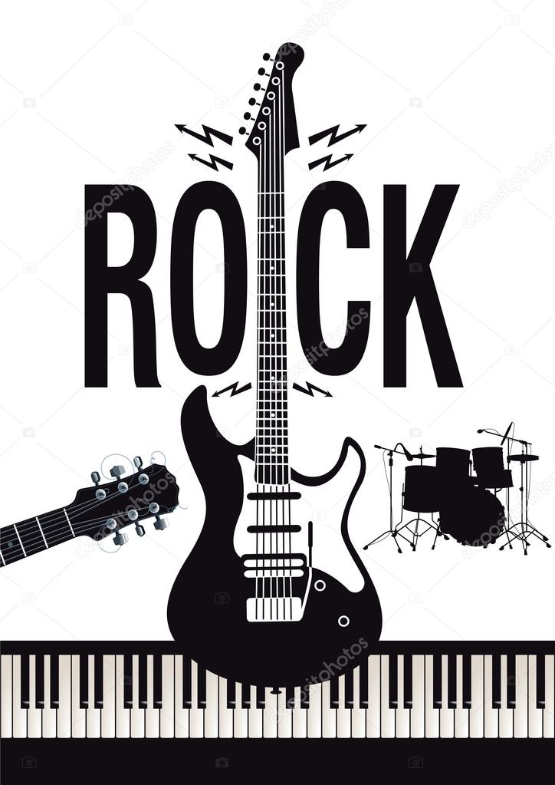

Orígenes
El rock tiene sus raíces en géneros como el blues, el rhythm and blues, el gospel y el country. Su desarrollo temprano involucró la fusión de estos estilos musicales.
El rock es un género musical increíblemente diverso que ha dejado una marca duradera en la cultura popular. Su capacidad para adaptarse y evolucionar ha contribuido a su longevidad y atractivo universal.
